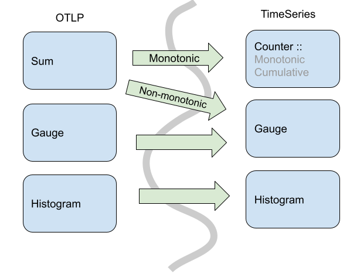

数据模型¶
Status: Mixed
Overview¶
Status: Stable
The OpenTelemetry data model for metrics consists of a protocol specification and semantic conventions for delivery of pre-aggregated metric timeseries data. The data model is designed for importing data from existing systems and exporting data into existing systems, as well as to support internal OpenTelemetry use-cases for generating Metrics from streams of Spans or Logs.
Popular existing metrics data formats can be unambiguously translated into the OpenTelemetry data model for metrics, without loss of semantics or fidelity. Translation from the Prometheus and Statsd exposition formats is explicitly specified.
The data model specifies a number of semantics-preserving data transformations for use on the collection path, supporting flexible system configuration. The model supports reliability and statelessness controls, through the choice of cumulative and delta transport. The model supports cost controls, through spatial and temporal reaggregation.
The OpenTelemetry collector is designed to accept metrics data in a number of formats, transport data using the OpenTelemetry data model, and then export into existing systems. The data model can be unambiguously translated into the Prometheus Remote Write protocol without loss of features or semantics, through well-defined translations of the data, including the ability to automatically remove attributes and lower histogram resolution.
Events => Data Stream => Timeseries¶
Status: Stable
The OTLP Metrics protocol is designed as a standard for transporting metric data. To describe the intended use of this data and the associated semantic meaning, OpenTelemetry metric data stream types will be linked into a framework containing a higher-level model, about Metrics APIs and discrete input values, and a lower-level model, defining the Timeseries and discrete output values. The relationship between models is displayed in the diagram below.

This protocol was designed to meet the requirements of the OpenCensus Metrics system, particularly to meet its concept of Metrics Views. Views are accomplished in the OpenTelemetry Metrics data model through support for data transformation on the collection path.
OpenTelemetry has identified three kinds of semantics-preserving Metric data transformation that are useful in building metrics collection systems as ways of controlling cost, reliability, and resource allocation. The OpenTelemetry Metrics data model is designed to support these transformations both inside an SDK as the data originates, or as a reprocessing stage inside the OpenTelemetry collector. These transformations are:
- Temporal reaggregation: Metrics that are collected at a high-frequency can be re-aggregated into longer intervals, allowing low-resolution timeseries to be pre-calculated or used in place of the original metric data.
- Spatial reaggregation: Metrics that are produced with unwanted attributes can be re-aggregated into metrics having fewer attributes.
- Delta-to-Cumulative: Metrics that are input and output with Delta temporality unburden the client from keeping high-cardinality state. The use of deltas allows downstream services to bear the cost of conversion into cumulative timeseries, or to forego the cost and calculate rates directly.
OpenTelemetry Metrics data streams are designed so that these transformations can be applied automatically to streams of the same type, subject to conditions outlined below. Every OTLP data stream has an intrinsic decomposable aggregate function making it semantically well-defined to merge data points across both temporal and spatial attributes. Every OTLP data point also has two meaningful timestamps which, combined with intrinsic aggregation, make it possible to carry out the standard metric data transformations for each of the model’s basic points while ensuring that the result carries the intended meaning.
As in OpenCensus Metrics, metrics data can be transformed into one or more Views, just by selecting the aggregation interval and the desired attributes. One stream of OTLP data can be transformed into multiple timeseries outputs by configuring different Views, and the required Views processing may be applied inside the SDK or by an external collector.
Example Use-cases¶
The metric data model is designed around a series of "core" use cases. While this list is not exhaustive, it is meant to be representative of the scope and breadth of OTel metrics usage.
- OTel SDK exports 10 second resolution to a single OTel collector, using cumulative temporality for a stateful client, stateless server:
- Collector passes-through original data to an OTLP destination
- Collector re-aggregates into longer intervals without changing attributes
- Collector re-aggregates into several distinct views, each with a subset of the available attributes, outputs to the same destination
- OTel SDK exports 10 second resolution to a single OTel collector, using delta temporality for a stateless client, stateful server:
- Collector re-aggregates into 60 second resolution
- Collector converts delta to cumulative temporality
- OTel SDK exports both 10 seconds resolution (e.g. CPU, request latency) and 15 minutes resolution (e.g. room temperature) to a single OTel Collector. The collector exports streams upstream with or without aggregation.
- A number of OTel SDKs running locally each exports 10 second resolution, each reports to a single (local) OTel collector.
- Collector re-aggregates into 60 second resolution
- Collector re-aggregates to eliminate the identity of individual SDKs (e.g.,
distinct
service.instance.idvalues) - Collector outputs to an OTLP destination
- Pool of OTel collectors receive OTLP and export Prometheus Remote Write
- Collector joins service discovery with metric resources
- Collector computes “up”, staleness marker
- Collector applies a distinct external label
- OTel collector receives Statsd and exports OTLP
- With delta temporality: stateless collector
- With cumulative temporality: stateful collector
- OTel SDK exports directly to 3P backend
These are considered the "core" use-cases used to analyze tradeoffs and design decisions within the metrics data model.
Out of Scope Use-cases¶
The metrics data model is NOT designed to be a perfect rosetta stone of metrics. Here are a set of use cases that, while won't be outright unsupported, are not in scope for key design decisions:
- Using OTLP as an intermediary format between two non-compatible formats
- Importing statsd => Prometheus PRW
- Importing collectd => Prometheus PRW
- Importing Prometheus endpoint scrape => [statsd push | collectd | opencensus]
- Importing OpenCensus "oca" => any non OC or OTel format
- TODO: define others.
Model Details¶
Status: Stable
OpenTelemetry fragments metrics into three interacting models:
- An Event model, representing how instrumentation reports metric data.
- A Timeseries model, representing how backends store metric data.
- A Metric Stream model, defining the *O*pen*T*e*L*emetry *P*rotocol (OTLP) representing how metric data streams are manipulated and transmitted between the Event model and the Timeseries storage. This is the model specified in this document.
Event Model¶
The event model is where recording of data happens. Its foundation is made of Instruments, which are used to record data observations via events. These raw events are then transformed in some fashion before being sent to some other system. OpenTelemetry metrics are designed such that the same instrument and events can be used in different ways to generate metric streams.

Even though observation events could be reported directly to a backend, in practice this would be infeasible due to the sheer volume of data used in observability systems, and the limited amount of network/CPU resources available for telemetry collection purposes. The best example of this is the Histogram metric where raw events are recorded in a compressed format rather than individual timeseries.
Note: The above picture shows how one instrument can transform events into more than one type of metric stream. There are caveats and nuances for when and how to do this. Instrument and metric configuration are outlined in the metrics API specification.
While OpenTelemetry provides flexibility in how instruments can be transformed into metric streams, the instruments are defined such that a reasonable default mapping can be provided. The exact OpenTelemetry instruments are detailed in the API specification.
In the Event model, the primary data are (instrument, number) points, originally observed in real time or on demand (for the synchronous and asynchronous cases, respectively).
Timeseries Model¶
In this low-level metrics data model, a Timeseries is defined by an entity consisting of several metadata properties:
- Metric name
- Attributes (dimensions)
- Value type of the point (integer, floating point, etc)
- Unit of measurement
The primary data of each timeseries are ordered (timestamp, value) points, with one of the following value types:
- Counter (Monotonic, Cumulative)
- Gauge
- Histogram
- Exponential Histogram
This model may be viewed as an idealization of Prometheus Remote Write. Like that protocol, we are additionally concerned with knowing when a point value is defined, as compared with being implicitly or explicitly absent. A metric stream of delta data points defines time-interval values, not point-in-time values. To precisely define presence and absence of data requires further development of the correspondence between these models.
Note: Prometheus is not the only possible timeseries model for OpenTelemetry to map into, but is used as a reference throughout this document.
OpenTelemetry Protocol data model¶
The OpenTelemetry protocol (OTLP) data model is composed of Metric data streams. These streams are in turn composed of metric data points. Metric data streams can be converted directly into Timeseries.
Metric streams are grouped into individual Metric objects, identified by:
- The originating
Resourceattributes - The instrumentation
Scope(e.g., instrumentation library name, version) - The metric stream's
name
Including name, the Metric object is defined by the following properties:
- The data point type (e.g.
Sum,Gauge,HistogramExponentialHistogram,Summary) - The metric stream's
unit - The metric stream's
description - Intrinsic data point properties, where applicable:
AggregationTemporality,Monotonic
The data point type, unit, and intrinsic properties are considered
identifying, whereas the description field is explicitly not identifying in
nature.
Extrinsic properties of specific points are not considered identifying; these include but are not limited to:
- Bucket boundaries of a
Histogramdata point - Scale or bucket count of a
ExponentialHistogramdata point.
The Metric object contains individual streams, identified by the set of
Attributes. Within the individual streams, points are identified by one or two
timestamps, details vary by data point type.
Within certain data point types (e.g., Sum and Gauge) there is variation
permitted in the numeric point value; in this case, the associated variation
(i.e., floating-point vs. integer) is not considered identifying.
OpenTelemetry Protocol data model: Producer recommendations¶
Producers SHOULD prevent the presence of multiple Metric identities for a
given name with the same Resource and Scope attributes. Producers are
expected to aggregate data for identical Metric objects as a basic feature, so
the appearance of multiple Metric, considered a "semantic error", generally
requires duplicate conflicting instrument registration to have occurred
somewhere.
Producers MAY be able to remediate the problem, depending on whether they are an SDK or a downstream processor:
- If the potential conflict involves a non-identifying property (i.e.,
description), the producer SHOULD choose the longer string. - If the potential conflict involves similar but disagreeing units (e.g., "ms" and "s"), an implementation MAY convert units to avoid semantic errors; otherwise an implementation SHOULD inform the user of a semantic error and pass through conflicting data.
- If the potential conflict involves an
AggregationTemporalityproperty, an implementation MAY convert temporality using a Cumulative-to-Delta or a Delta-to-Cumulative transformation; otherwise, an implementation SHOULD inform the user of a semantic error and pass through conflicting data. - Generally, for potential conflicts involving an identifying property (i.e.,
all properties except
description), the producer SHOULD inform the user of a semantic error and pass through conflicting data.
When semantic errors such as these occur inside an implementation of the
OpenTelemetry API, there is an presumption of a fixed Resource value.
Consequently, SDKs implementing the OpenTelemetry API have complete information
about the origin of duplicate instrument registration conflicts and are
sometimes able to help users avoid semantic errors. See the SDK specification
for specific details.
OpenTelemetry Protocol data model: Consumer recommendations¶
Consumers MAY reject OpenTelemetry Metrics data containing semantic errors
(i.e., more than one Metric identity for a given name, Resource, and
Scope).
OpenTelemetry does not specify any means for conveying such an outcome to the end user, although this subject deserves attention.
Point kinds¶
A metric stream can use one of these basic point kinds, all of which satisfy the requirements above, meaning they define a decomposable aggregate function (also known as a “natural merge” function) for points of the same kind. 1
The basic point kinds are:
Comparing the OTLP Metric Data Stream and Timeseries data models, OTLP does not map 1:1 from its point types into timeseries points. In OTLP, a Sum point can represent a monotonic count or a non-monotonic count. This means an OTLP Sum is either translated into a Timeseries Counter, when the sum is monotonic, or a Gauge when the sum is not monotonic.

Specifically, in OpenTelemetry Sums always have an aggregate function where you can combine via addition. So, for non-monotonic sums in OpenTelemetry we can aggregate (naturally) via addition. In the timeseries model, you cannot assume that any particular Gauge is a sum, so the default aggregation would not be addition.
In addition to the core point kinds used in OTLP, there are also data types designed for compatibility with existing metric formats.
Metric points¶
Status: Stable
Sums¶
Sums in OTLP consist of the following:
- An Aggregation Temporality of delta or cumulative.
- A flag denoting whether the Sum is monotonic. In this case of metrics, this means the sum is nominally increasing, which we assume without loss of generality.
- For delta monotonic sums, this means the reader SHOULD expect non-negative values.
- For cumulative monotonic sums, this means the reader SHOULD expect values that are not less than the previous value.
- A set of data points, each containing:
- An independent set of Attribute name-value pairs.
- A time window (of
(start, end]) time for which the Sum was calculated.- The time interval is inclusive of the end time.
- Times are specified in Value is UNIX Epoch time in nanoseconds since
00:00:00 UTC on 1 January 1970
- (optional) a set of examplars (see Exemplars).
The aggregation temporality is used to understand the context in which the sum was calculated. When the aggregation temporality is "delta", we expect to have no overlap in time windows for metric streams, e.g.
Contrast with cumulative aggregation temporality where we expect to report the full sum since 'start' (where usually start means a process/application start):

There are various tradeoffs between using Delta vs. Cumulative aggregation, in various use cases, e.g.:
- Detecting process restarts
- Calculating rates
- Push vs. Pull based metric reporting
OTLP supports both models, and allows APIs, SDKs and users to determine the best tradeoff for their use case.
Gauge¶
A Gauge in OTLP represents a sampled value at a given time. A Gauge stream consists of:
- A set of data points, each containing:
- An independent set of Attribute name-value pairs.
- A sampled value (e.g. current CPU temperature)
- A timestamp when the value was sampled (
time_unix_nano) - (optional) A timestamp (
start_time_unix_nano) which best represents the first possible moment a measurement could be recorded. This is commonly set to the timestamp when a metric collection system started. - (optional) a set of examplars (see Exemplars).
In OTLP, a point within a Gauge stream represents the last-sampled event for a given time window.

In this example, we can see an underlying timeseries we are sampling with our Gauge. While the event model can sample more than once for a given metric reporting interval, only the last value is reported in the metric stream via OTLP.
Gauges do not provide an aggregation semantic, instead "last sample value" is used when performing operations like temporal alignment or adjusting resolution.
Gauges can be aggregated through transformation into histograms, or other metric types. These operations are not done by default, and require direct user configuration.
Histogram¶
Histogram metric data points convey a population of recorded measurements in a compressed format. A histogram bundles a set of events into divided populations with an overall event count and aggregate sum for all events.

Histograms consist of the following:
- An Aggregation Temporality of delta or cumulative.
- A set of data points, each containing:
- An independent set of Attribute name-value pairs.
- A time window (of
(start, end]) time for which the Histogram was bundled.- The time interval is inclusive of the end time.
- Time values are specified as nanoseconds since the UNIX Epoch (00:00:00 UTC on 1 January 1970).
- A count (
count) of the total population of points in the histogram. - A sum (
sum) of all the values in the histogram. - (optional) The min (
min) of all values in the histogram. - (optional) The max (
max) of all values in the histogram. - (optional) A series of buckets with:
- Explicit boundary values. These values denote the lower and upper bounds for buckets and whether not a given observation would be recorded in this bucket.
- A count of the number of observations that fell within this bucket.
- (optional) a set of examplars (see Exemplars).
Like Sums, Histograms also define an aggregation temporality. The picture above denotes Delta temporality where accumulated event counts are reset to zero after reporting and a new aggregation occurs. Cumulative, on the other hand, continues to aggregate events, resetting with the use of a new start time.
The aggregation temporality also has implications on the min and max fields. Min and max are more useful for Delta temporality, since the values represented by Cumulative min and max will stabilize as more events are recorded. Additionally, it is possible to convert min and max from Delta to Cumulative, but not from Cumulative to Delta. When converting from Cumulative to Delta, min and max can be dropped, or captured in an alternative representation such as a gauge.
Bucket counts are optional. A Histogram without buckets conveys a population in
terms of only the sum and count, and may be interpreted as a histogram with
single bucket covering (-Inf, +Inf).
Histogram: Bucket inclusivity¶
Bucket upper-bounds are inclusive (except for the case where the upper-bound is +Inf) while bucket lower-bounds are exclusive. That is, buckets express the number of values that are greater than their lower bound and less than or equal to their upper bound. Importers and exporters working with OpenTelemetry Metrics data are meant to disregard this specification when translating to and from histogram formats that use inclusive lower bounds and exclusive upper bounds. Changing the inclusivity and exclusivity of bounds is an example of worst-case Histogram error; users should choose Histogram boundaries so that worst-case error is within their error tolerance.
ExponentialHistogram¶
Status: Stable
ExponentialHistogram data points are an alternate representation to the Histogram data point, used to convey a population of recorded measurements in a compressed format. ExponentialHistogram compresses bucket boundaries using an exponential formula, making it suitable for conveying high dynamic range data with small relative error, compared with alternative representations of similar size.
Statements about Histogram that refer to aggregation temporality, attributes,
and timestamps, as well as the sum, count, min, max and exemplars
fields, are the same for ExponentialHistogram. These fields all share
identical interpretation as for Histogram, only the bucket structure differs
between these two types.
Exponential Scale¶
The resolution of the ExponentialHistogram is characterized by a parameter known
as scale, with larger values of scale offering greater precision. Bucket
boundaries of the ExponentialHistogram are located at integer powers of the
base, also known as the "growth factor", where:
The symbol ** in these formulas represents exponentiation, thus 2**x is read
"Two to the power of x", typically computed by an expression like
math.Pow(2.0, x). Calculated base values for selected scales are shown
below:
| Scale | Base | Expression |
|---|---|---|
| 10 | 1.00068 | 2**(1/1024) |
| 9 | 1.00135 | 2**(1/512) |
| 8 | 1.00271 | 2**(1/256) |
| 7 | 1.00543 | 2**(1/128) |
| 6 | 1.01089 | 2**(1/64) |
| 5 | 1.02190 | 2**(1/32) |
| 4 | 1.04427 | 2**(1/16) |
| 3 | 1.09051 | 2**(⅛) |
| 2 | 1.18921 | 2**(¼) |
| 1 | 1.41421 | 2**(½) |
| 0 | 2 | 2**1 |
| -1 | 4 | 2**2 |
| -2 | 16 | 2**4 |
| -3 | 256 | 2**8 |
| -4 | 65536 | 2**16 |
An important property of this design is described as "perfect subsetting". Buckets of an exponential Histogram with a given scale map exactly into buckets of exponential Histograms with lesser scales, which allows consumers to lower the resolution of a histogram (i.e., downscale) without introducing error.
Exponential Buckets¶
The ExponentialHistogram bucket identified by index, a signed integer,
represents values in the population that are greater than base**index and less
than or equal to base**(index+1).
The positive and negative ranges of the histogram are expressed separately. Negative values are mapped by their absolute value into the negative range using the same scale as the positive range. Note that in the negative range, therefore, histogram buckets use lower-inclusive boundaries.
Each range of the ExponentialHistogram data point uses a dense representation of
the buckets, where a range of buckets is expressed as a single offset value, a
signed integer, and an array of count values, where array element i represents
the bucket count for bucket index offset+i.
For a given range, positive or negative:
- Bucket index
0counts measurements in the range(1, base] - Positive indexes correspond with absolute values greater than
base - Negative indexes correspond with absolute values less than or equal to 1
- There are
2**scalebuckets between successive powers of 2.
For example, with scale=3 there are 2**3 buckets between 1 and 2. Note that
the lower boundary for bucket index 4 in a scale=3 histogram maps into the
lower boundary for bucket index 2 in a scale=2 histogram and maps into the
lower boundary for bucket index 1 (i.e., the base) in a scale=1
histogram—these are examples of perfect subsetting.
scale=3 bucket index |
lower boundary | equation |
|---|---|---|
| 0 | 1 | 2**(0/8) |
| 1 | 1.09051 | 2**(⅛) |
| 2 | 1.18921 | 2**(2/8), 2**(¼) |
| 3 | 1.29684 | 2**(⅜) |
| 4 | 1.41421 | 2**(4/8), 2**(2/4), 2**(½) |
| 5 | 1.54221 | 2**(⅝) |
| 6 | 1.68179 | 2**(6/8) |
| 7 | 1.83401 | 2**(⅞) |
Zero Count and Zero Threshold¶
The ExponentialHistogram contains a special zero_count bucket and an optional
zero_threshold field where zero_count contains the count of values whose
absolute value is less than or equal to zero_threshold. The precise value for
the zero_threshold is arbitrary and not related to the scale.
When zero_threshold is unset or 0, this bucket stores values that cannot be
expressed using the standard exponential formula as well as values that have
been rounded to zero.
Histograms with different zero_threshold can still be merged easily by taking
the largest zero_threshold of all involved Histograms and merge the lower
buckets of Histograms with a smaller zero_threshold into the common wider zero
bucket. If a merged zero_threshold is in the middle of a populated bucket, it
needs to be increased to match the upper boundary of the bucket.
In special cases, a wider zero bucket could be used to limit the total number of populated buckets.
Producer Expectations¶
Producers MAY use an inexact mapping function because in the general case:
- Exact mapping functions are substantially more complex to implement.
- Boundaries cannot be exactly represented as floating point numbers for all scales.
Generally, producers SHOULD use a mapping function with an expected difference of at most 1 from the correct result for all inputs.
The ExponentialHistogram design makes it possible to express values that are too
large or small to be represented in the 64 bit "double" floating point format.
Certain values for scale, while meaningful, are not necessarily useful.
The range of data represented by an ExponentialHistogram determines which scales can be usefully applied. Regardless of scale, producers SHOULD ensure that the index of any encoded bucket falls within the range of a signed 32-bit integer. This recommendation is applied to limit the width of integers used in standard processing pipelines such as the OpenTelemetry collector. The wire-level protocol could be extended for 64-bit bucket indices in a future release.
Producers use a mapping function to compute bucket indices. Producers are presumed to support IEEE double-width floating-point numbers with 11-bit exponent and 52-bit significand. The pseudo-code below for mapping values to exponents refers to the following constants:
The following choices of mapping function have been validated through reference implementations.
Scale Zero: Extract the Exponent¶
For scale zero, the index of a value equals its normalized base-2 exponent,
meaning the value of exponent in the base-2 fractional representation
1._significand_ * 2**_exponent_. Normal IEEE 754 double-width floating point
values have indices in the range [-1022, +1023] and subnormal values have
indices in the range [-1074, -1023]. This may be written as:
Implementations are permitted to round subnormal values up to the smallest normal value, which may permit the use of a built-in function:
Negative Scale: Extract and Shift the Exponent¶
For negative scales, the index of a value equals the normalized base-2 exponent
(as by MapToIndexScale0() above) shifted to the right by -scale. Note that
because of sign extension, this shift performs correct rounding for the negative
indices. This may be written as:
The reverse mapping function is:
Note that the reverse mapping function is expected to produce subnormal values
even when the mapping function rounds them into normal values, since the lower
boundary of the bucket containing the smallest normal value may be subnormal.
For example, at scale -4 the smallest normal value 0x1p-1022 falls into a
bucket with lower boundary 0x1p-1024.
All Scales: Use the Logarithm Function¶
The mapping and reverse-mapping functions for scale zero and negative scales
above are recommended because they are exact. At these scales, math.Log()
could be inaccurate and more expensive than directly calculating the bucket
index. The methods in this section MAY be used at all scales, although they are
definitely useful for positive scales.
The built-in natural logarithm function can be used to compute the bucket index by applying a scaling factor, derived as follows.
- The exponential base is defined as
base == 2**(2**(-scale)) - We want
indexwherebase**index < value <= base**(index+1). - Apply the base-
baselogarithm, i.e.,log_base(base**index) < log_base(value) <= log_base(base**(index+1))(wherelog_X(Y)indicates the base-Xlogarithm ofY) - Rewrite using
log_X(X**Y) == Y: - Thus,
index < log_base(value) <= index+1 - Using the
Ceiling()function to simplify the equation:Ceiling(log_base(value)) == index+1 - Subtract one from each side:
index == Ceiling(log_base(value)) - 1 - Rewrite using
log_X(Y) == log_N(Y) / log_N(X)to allow use of the natural logarithm - Thus,
index == Ceiling(log(value)/log(base)) - 1 - The scaling factor
1/log(base)can be derived using the formulas in (1), (4), and (8).
The scaling factor equals 2**scale / log(2) can be written as
math.Ldexp(math.Log2E, scale) since the constant math.Log2E is defined as
1/log(2). Putting this together:
The use of math.Log() to calculate the bucket index is not guaranteed to be
exactly correct near powers of two. Values near a boundary could be mapped into
the incorrect bucket due to inaccuracy. Defining an exact mapping function is
out of scope for this document.
However, when inputs are an exact power of two, it is possible to calculate the exactly correct bucket index. Since it is relatively simple to check for exact powers of two, implementations SHOULD apply such a special case:
The reverse mapping function for positive scales is:
Implementations are expected to verify that their mapping function and inverse
mapping function are correct near the lowest and highest IEEE floating point
values. A mathematically correct formula may produce the wrong result, because
of accumulated floating point calculation error or underflow/overflow of
intermediate results. In the Golang reference implementation, for example, the
above formula computes +Inf for the maximum-index bucket. In this case, it is
appropriate to subtract 1<<scale from the index and multiply the result by
2.
In the Golang reference implementation, for example, the above formula does not
accurately compute the lower boundary of the minimum-index bucket (it is a
subnormal value). In this case, it is appropriate to add 1<<scale to the index
and divide the result by 2.
Note that floating-point to integer type conversions have been omitted from the code fragments above, to improve readability.
ExponentialHistogram: Producer Recommendations¶
At the lowest or highest end of the 64 bit IEEE floating point, a bucket's range may only be partially representable by the floating point number format. When mapping a number in these buckets, a producer may correctly return the index of such a partially representable bucket. This is considered a normal condition.
For positive scales, the logarithm method is preferred because it requires very little code, is easy to validate and is nearly as fast and accurate as the lookup table approach. For zero scale and negative scales, directly calculating the index from the floating-point representation is more efficient.
The use of a built-in logarithm function could lead to results that differ from the bucket index that would be computed using arbitrary precision or a lookup table, however producers are not required to perform an exact computation. As a result, ExponentialHistogram exemplars could map into buckets with zero count. We expect to find such values counted in the adjacent buckets.
ExponentialHistogram: Consumer Recommendations¶
ExponentialHistogram bucket indices are expected to map into buckets where both the upper and lower boundaries can be represented using IEEE 754 double-width floating point values. Consumers MAY round the unrepresentable boundary of a partially representable bucket index to the nearest representable value.
Consumers SHOULD reject ExponentialHistogram data with scale and bucket
indices that overflow or underflow this representation. Consumers that reject
such data SHOULD warn the user through error logging that out-of-range data was
received.
ExponentialHistogram: Bucket inclusivity¶
The specification on bucket inclusivity made for explicit-boundary Histogram data applies equally to ExponentialHistogram data.
Summary (Legacy)¶
Summary metric data points convey quantile summaries, e.g. What is the 99-th percentile latency of my HTTP server. Unlike other point types in OpenTelemetry, Summary points cannot always be merged in a meaningful way. This point type is not recommended for new applications and exists for compatibility with other formats.
Summary consists of the following:
- A set of data points, each containing:
- An independent set of Attribute name-value pairs.
- A timestamp when the value was sampled (
time_unix_nano) - (optional) A timestamp (
start_time_unix_nano) that denotes the start time of observation collection for the summary. - A count of the number of observations in the population of the data point.
- A sum of the values in the population.
- A set of quantile values (in strictly increasing order) consisting of:
- The quantile of a distribution, within the interval
[0.0, 1.0]. For example, the value0.9would represent the 90th-percentile. - The value of the quantile. This MUST be non-negative.
- The quantile of a distribution, within the interval
Quantile values 0.0 and 1.0 are defined to be equal to the minimum and maximum values, respectively.
Quantile values do not need to represent values observed between
start_time_unix_nano and time_unix_nano and are expected to be calculated
against recent time windows, typically the last 5-10 minutes.
Exemplars¶
Status: Stable
An exemplar is a recorded value that associates OpenTelemetry context to a metric event within a Metric. One use case is to allow users to link Trace signals w/ Metrics.
Exemplars consist of:
- (optional) The trace associated with a recording (
trace_id,span_id) - The time of the observation (
time_unix_nano) - The recorded value (
value) - A set of filtered attributes (
filtered_attributes) which provide additional insight into the Context when the observation was made.
For Histograms, when an exemplar exists, its value already participates in
bucket_counts, count and sum reported by the histogram point.
For Sums, when an exemplar exists, its value is already included in the overall sum.
For Gauges, when an exemplar exists, its value was seen at some point within the gauge interval for the same source.
Single-Writer¶
Status: Stable
All metric data streams within OTLP MUST have one logical writer. This means, conceptually, that any Timeseries created from the Protocol MUST have one originating source of truth. In practical terms, this implies the following:
- All metric data streams produced by OTel SDKs SHOULD have globally unique
identity at any given point in time.
Metricidentity is defined above. - Aggregations of metric streams MUST only be written from a single logical source at any given point time. Note: This implies aggregated metric streams must reach one destination.
In systems, there is the possibility of multiple writers sending data for the same metric stream (duplication). For example, if an SDK implementation fails to find uniquely identifying Resource attributes for a component, then all instances of that component could be reporting metrics as if they are from the same resource. In this case, metrics will be reported at inconsistent time intervals. For metrics like cumulative sums, this could cause issues where pairs of points appear to reset the cumulative sum leading to unusable metrics.
Multiple writers for a metric stream is considered an error state, or misbehaving system. Receivers SHOULD presume a single writer was intended and eliminate overlap / deduplicate.
Note: Identity is an important concept in most metrics systems. For example, Prometheus directly calls out uniqueness:
Take care with
labeldropandlabelkeepto ensure that metrics are still uniquely labeled once the labels are removed.
For OTLP, the Single-Writer principle grants a way to reason over error scenarios and take corrective actions. Additionally, it ensures that well-behaved systems can perform metric stream manipulation without undesired degradation or loss of visibility.
Note that violations of the Single-Writer principle are not semantic errors,
generally they result from misconfiguration. Whereas semantic errors can
sometimes be corrected by configuring Views, violations of the Single-Writer
principle can be corrected by differentiating the Resource used or by ensuring
that streams for a given Resource and Attribute set do not overlap in time.
Temporality¶
Status: Stable
The notion of temporality refers to the way additive quantities are expressed, in relation to time, indicating whether reported values incorporate previous measurements or not. Sum, Histogram, and ExponentialHistogram data points, in particular, support a choice of aggregation temporality.
Every OTLP metric data point has two associated timestamps. The first, mandatory
timestamp is the one associated with the observation, the moment when the
measurement became current or took effect, and is referred to as TimeUnixNano.
The second, optional timestamp is used to indicate when a sequence of points is
unbroken, and is referred to as StartTimeUnixNano.
The second timestamp is strongly recommended for Sum, Histogram, and
ExponentialHistogram points, as it is necessary to correctly interpret the rate
from an OTLP stream, in a manner that is aware of restarts. The use of
StartTimeUnixNano to indicate the start of an unbroken sequence of points
means it can also be used to encode implicit gaps in the stream.
- Cumulative temporality means that successive data points repeat the starting timestamp. For example, from start time T0, cumulative data points cover time ranges (T0, T1], (T0, T2], (T0, T3], and so on.
- Delta temporality means that successive data points advance the starting timestamp. For example, from start time T0, delta data points cover time ranges (T0, T1], (T1, T2], (T2, T3], and so on.
The use of cumulative temporality for monotonic sums is common, exemplified by Prometheus. Systems based in cumulative monotonic sums are naturally simpler, in terms of the cost of adding reliability. When collection fails intermittently, gaps in the data are naturally averaged from cumulative measurements. Cumulative data requires the sender to remember all previous measurements, an “up-front” memory cost proportional to cardinality.
The use of delta temporality for metric sums is also common, exemplified by Statsd. There is a connection between OpenTelemetry tracing, in which a Span event commonly is translated into two metric events (a 1-count and a timing measurement). Delta temporality enables sampling and supports shifting the cost of cardinality outside of the process.
Resets and Gaps¶
Status: Experimental
When the StartTimeUnixNano field is present, it allows the consumer to observe
when there are gaps and overlapping writers in a stream. Correctly used, the
consumer can observe both transient and ongoing violations of the single-writer
principle as well as reset events. In an unbroken sequence of observations, the
StartTimeUnixNano always matches either the TimeUnixNano or the
StartTimeUnixNano of other points in the same sequence. For the initial points
in an unbroken sequence:
- When
StartTimeUnixNanois less thanTimeUnixNano, a new unbroken sequence of observations begins with a "true" reset at a known start time. The zero value is implicit, it is not necessary to record the starting point. - When
StartTimeUnixNanoequalsTimeUnixNano, a new unbroken sequence of observations begins with a reset at an unknown start time. The initial observed value is recorded to indicate that an unbroken sequence of observations resumes. These points have zero duration, and indicate that nothing is known about previously-reported points and that data may have been lost.
For subsequent points in an unbroken sequence:
- For points with delta aggregation temporality, the
StartTimeUnixNanoof each point matches theTimeUnixNanoof the preceding point - Otherwise, the
StartTimeUnixNanoof each point matches theStartTimeUnixNanoof the initial observation.
A metric stream has a gap, where it is implicitly undefined, anywhere there is a
range of time such that no point covers that range range with its
StartTimeUnixNano and TimeUnixNano fields.
Cumulative streams: handling unknown start time¶
An unbroken stream of observations is resumed with a zero-duration point and non-zero value, as described above. For points with cumulative aggregation temporality, the rate contributed to the timeseries by each point depends on the prior point value in the stream.
To correctly compute the rate contribution of the first point in an unbroken
sequence requires knowing whether it is the first point. Unknown start-time
reset points appear with TimeUnixNano equal to the StartTimeUnixNano of a
stream of points, in which case the rate contribution of the first point is
considered zero. An earlier sequence of observations is expected to have
reported the same cumulative state prior to a gap in observations.
The presence or absence of a point with TimeUnixNano equal to the
StartTimeUnixNano indicates how to count rate contribution from the first
point in a sequence. If the first point in an unknown start-time reset sequence
is lost, the consumer of this data might overcount the rate contribution of the
second point, as it then appears like a "true" reset.
Various approaches can be taken to avoid overcounting. A system could use state from earlier in the stream to resolve start-time ambiguity, for example.
Cumulative streams: inserting true reset points¶
The absolute value of the cumulative counter is often considered meaningful, but when the cumulative value is only used to calculate a rate function, it is possible to drop the initial unknown start-time reset point, but remember the initially observed value in order to modify subsequent observations. Later in the cumulative sequence are output relative to the initial value, thus appears as a true reset offset by an unknown constant.
This process is known as inserting true reset points, a special case of reaggregation for cumulative series.
Overlap¶
Status: Experimental
Overlap occurs when more than one metric data point is defined for a metric
stream within a time window. Overlap is usually caused through
mis-configuration, and it can lead to serious mis-interpretation of the data.
StartTimeUnixNano is recommended so that consumers can recognize and response
to overlapping points.
We define three principles for handling overlap:
- Resolution (correction via dropping points)
- Observability (allowing the data to flow to backends)
- Interpolation (correction via data manipulation)
Overlap resolution¶
When more than one process writes the same metric data stream, OTLP data points may appear to overlap. This condition typically results from misconfiguration, but can also result from running identical processes (indicative of operating system or SDK bugs, like missing process attributes). When there are overlapping points, receivers SHOULD eliminate points so that there are no overlaps. Which data to select in overlapping cases is not specified.
Overlap observability¶
OpenTelemetry collectors SHOULD export telemetry when they observe overlapping points in data streams, so that the user can monitor for erroneous configurations.
Overlap interpolation¶
When one process starts just as another exits, the appearance of overlapping points may be expected. In this case, OpenTelemetry collectors SHOULD modify points at the change-over using interpolation for Sum data points, to reduce gaps to zero width in these cases, without any overlap.
Stream Manipulations¶
Status: Experimental
Pending introduction.
Sums: Delta-to-Cumulative¶
While OpenTelemetry (and some metric backends) allows both Delta and Cumulative sums to be reported, the timeseries model we target does not support delta counters. To this end, converting from delta to cumulative needs to be defined so that backends can use this mechanism.
Note: This is not the only possible Delta to Cumulative algorithm. It is just one possible implementation that fits the OTel Data Model.
Converting from delta points to cumulative point is inherently a stateful operation. To successfully translate, we need all incoming delta points to reach one destination which can keep the current counter state and generate a new cumulative stream of data (see single writer principle).
The algorithm is scheduled out as follows:
- Upon receiving the first Delta point for a given counter we set up the following:
- A new counter which stores the cumulative sum, set to the initial counter.
- A start time that aligns with the start time of the first point.
- A "last seen" time that aligns with the time of the first point.
- Upon receiving future Delta points, we do the following:
- If the next point aligns with the expected next-time window (see
detecting delta restarts)
- Update the "last seen" time to align with the time of the current point.
- Add the current value to the cumulative counter
- Output a new cumulative point with the original start time and current last seen time and count.
- if the current point precedes the start time, then drop this point. Note: there are algorithms which can deal with late arriving points.
- if the next point does NOT align with the expected next-time window, then reset the counter following the same steps performed as if the current point was the first point seen.
Sums: detecting alignment issues¶
When the next delta sum reported for a given metric stream does not align with where we expect it, one of several things could have occurred:
- The process reporting metrics was rebooted, leading to a new reporting interval for the metric.
- A Single-Writer principle violation where multiple processes are reporting the same metric stream.
- There was a lost data point, or dropped information.
In all of these scenarios we do our best to give any cumulative metric knowledge that some data was lost, and reset the counter.
We detect alignment via two mechanisms:
- If the incoming delta time interval has significant overlap with the previous time interval, we assume a violation of the single-writer principle and can be handled with one of the following options:
- Simply report the inconsistencies in time intervals, as the error condition could be caused by a misconfiguration.
- Eliminate the overlap / deduplicate on the receiver side.
- Correct the inconsistent time intervals by differentiating the given
ResourceandAttributeset used from overlapping time. - If the incoming delta time interval has a significant gap from the last seen time, we assume some kind of reboot/restart and reset the cumulative counter.
Sums: Missing Timestamps¶
One degenerate case for the delta-to-cumulative algorithm is when timestamps are missing from metric data points. While this shouldn't be the case when using OpenTelemetry generated metrics, it can occur when adapting other metric formats, e.g. StatsD counts.
In this scenario, the algorithm listed above would reset the cumulative sum on every data point due to not being able to determine alignment or point overlap. For comparison, see the simple logic used in statsd sums where all points are added, and lost points are ignored.
Footnotes¶
[1] OTLP supports data point kinds that do not satisfy these conditions; they are well-defined but do not support standard metric data transformations.